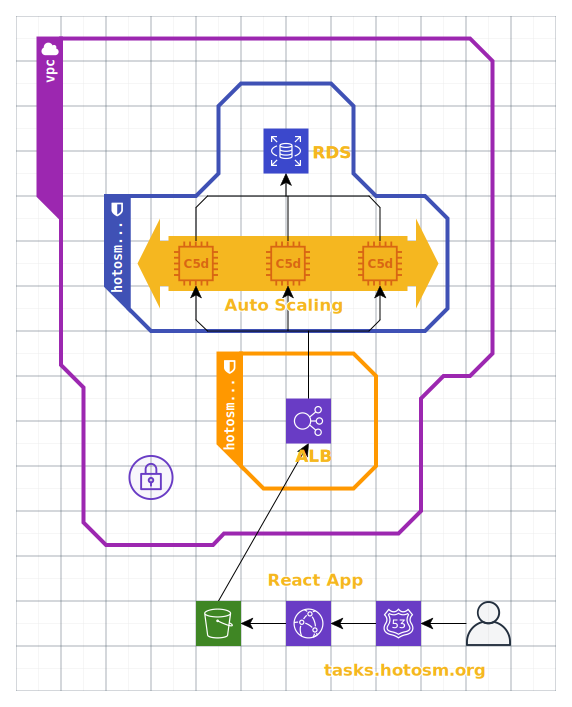

Architecture¶

Reference for the Cloudformation script:
TaskingManagerASG AutoScalingGroup configures the properties of the Autoscaling Group. There is a condition that determines three levels of autoscaling: development (1 instance only), demo (max 3 instances), and production (min 2 max 6 instances).
TaskingManagerScaleUp Scaling Policy determines the threshold at which the ASG scales up. We use the CloudWatch metric ALBRequestCountPerTarget to keep the number of requests per instance below a certain level.
TaskingManagerLaunchConfiguration has a number of metadata files and commands which are loaded and run during instantiation of a new server into the ASG. The Tasking Manager environment variables are set in this resource.
TaskingManagerEC2Role IAM role enables the backend servers to communicate with CodeDeploy, CloudWatch monitoring, Cloudformation, and the RDS Database.
TaskingManagerDatabaseDumpAccessRole is an EC2 IAM Role that is only used if a database dump file is given in the configuration, enabling access to the s3 bucket containing that file.
TaskingManagerEC2InstanceProfile is a required resource for giving a server programmatic access to AWS services.
TaskingManagerLoadBalancer configures the security groups and subnets for the Application Load Balancer AWS resource.
TaskingManagerLoadBalancerRoute53 record set for the load balancer.
TaskingManagerTargetGroup configures health checks for each target in the Load Balancer.
TaskingManagerLoadBalancerHTTPSListener assigns the SSL Certificate, protocol, and port to the HTTPS Listener.
TaskingManagerLoadBalancerHTTPListener redirects requests to HTTPS.
TaskingManagerRDS configures all the properties of the database RDS.
TaskingManagerReactBucket is the bucket where the frontend code is stored and served.
TaskingManagerReactBucketPolicy gives read access to the objects stored in the bucket.
TaskingManagerReactCloudfront configures the CloudFront Distribution for the static frontend stored on S3.
TaskingManagerRoute53 is the Route53 Record for the frontend,
i.e. tasks.hotosm.org
Parameters¶
GitSha is the commit hash from the HOTOSM Tasking Manager repository to be deployed.
NetworkEnvironment has only two options- staging and
production, and determines the security groups used for the EC2s and
Load Balancer.
AutoscalingPolicy can be development, demo, or production
and determines the min/max number of instances.
DBSnapshot is an optional parameter. Specify the RDS Snapshot ID to create the database from a snapshot.
DatabaseDump is an optional parameter. Specify the s3 bucket object path to create the database from a plaintext dump file.
NewRelicLicense
PostgresDB is the name of the database
PostgresPassword is the database password
PostgresUser is the database user
DatabaseEngineVersion AWS PostgreSQL Engine version
DatabaseInstanceType is the AWS database instance tier (eg db.t3.large)
DatabaseDiskSize is the size (in GB) of the RDS instance. Recommended at least 100GB for better IOPS
DatabaseParameterGroupName use the default parameter group if you don't know what this is.
DatabaseSnapshotRetentionPeriod Retention period for automatic (scheduled) snapshots in days.
ELBSubnets is a comma-separated string of subnets for your AWS region. Make sure the subnets support the EC2 instance type.
SSLCertificateIdentifier the ID for the AWS SSL Certificate
TaskingManagerLogDirectory the path on the instance where the logs
are stored on the server, e.g. /var/log/tasking-manager/
TaskingManagerClientId is a key generated by creating and OSM OAuth Client Application.
TaskingManagerClientSecret is a secret key generated by creating and OSM OAuth Client Application.
TaskingManagerRedirectUri allowed URIs to which the user can be redirected after authorizing the application.
TaskingManagerScope are scope(s) which may be requested by a client.
TaskingManagerSecret a random string for the frontend and backend to communicate.
TaskingManagerAppBaseUrl the full base url of the site,
e.g. https://tasks.hotosm.org/.
TaskingManagerEmailFromAddress an email address from which messages will be sent to users.
TaskingManagerEmailContactAddress a contact address which will show up in places around the site
TaskingManagerLogLevel can be either DEBUG or INFO
TaskingManagerImageUploadAPIURL
TaskingManagerImageUploadAPIKey
TaskingManagerSMTPHost the host url for the AWS Simple Email Service
TaskingManagerSMTPPassword the authentication password for AWS SES
TaskingManagerSMTPUser the authentication user for AWS SES
TaskingManagerSMTPPort the port for AWS SES
TaskingManagerDefaultChangesetComment the project default comment hashtag
TaskingManagerURL the url without the protocol- e.g. tasks.hotosm.org
TaskingManagerOrgName Name of the app/org hosting the app
TaskingManagerOrgCode 3 letter code for the org name
SentryBackendDSN If using sentry, input DSN url here
TaskingManagerLogo URL for a logo